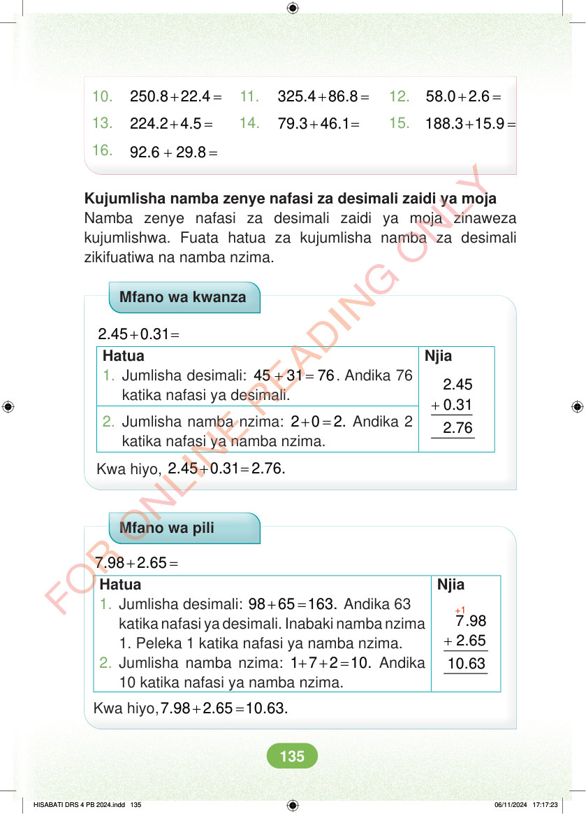

10. + = 250.8 22.4 11. + = 325.4 86.8 12. + = 58.0 2.6 13. + = 224.2 4.5 14. + = 79.3 46.1 15. + = 188.3 15.9 16. + = 92.6 29.8 Kujumlisha namba zenye nafasi za desimali zaidi ya moja Namba zenye nafasi za desimali zaidi ya moja zinaweza kujumlishwa. Fuata hatua za kujumlisha namba za desimali zikifuatiwa na namba nzima. Mfano wa kwanza Njia + = 2.45 0.31 Hatua 1. Jumlisha desimali: + = 45 31 76. Andika 76 katika nafasi ya desimali. + 2.45 0.31 2.76 2. Jumlisha namba nzima: + = 2 0 2. Andika 2 katika nafasi ya namba nzima. Kwa hiyo, + = 2.45 0.31 2.76. Mfano wa pili Njia +1 + = 7.98 2.65 Hatua 1. Jumlisha desimali: + = 98 65 163. Andika 63 katika nafasi ya desimali. Inabaki namba nzima + 7.98 2.65 10.63 1. Peleka 1 katika nafasi ya namba nzima. 2. Jumlisha namba nzima: + + = 1 7 2 10. Andika 10 katika nafasi ya namba nzima. Kwa hiyo, + = 7.98 2.65 10.63. HISABATI DRS 4 PB 2024.indd 135 HISABATI DRS 4 PB 2024.indd 135 06/11/2024 17:17:23 06/11/2024 17:17:23